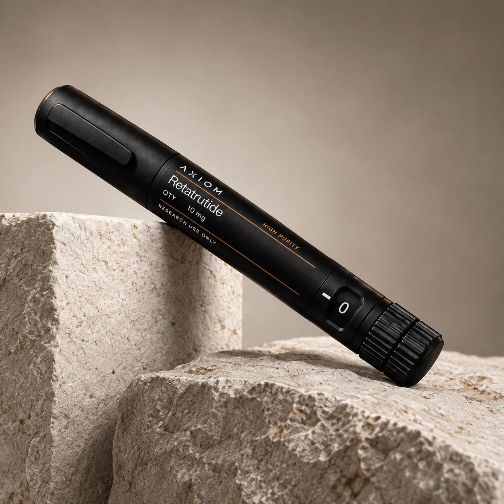
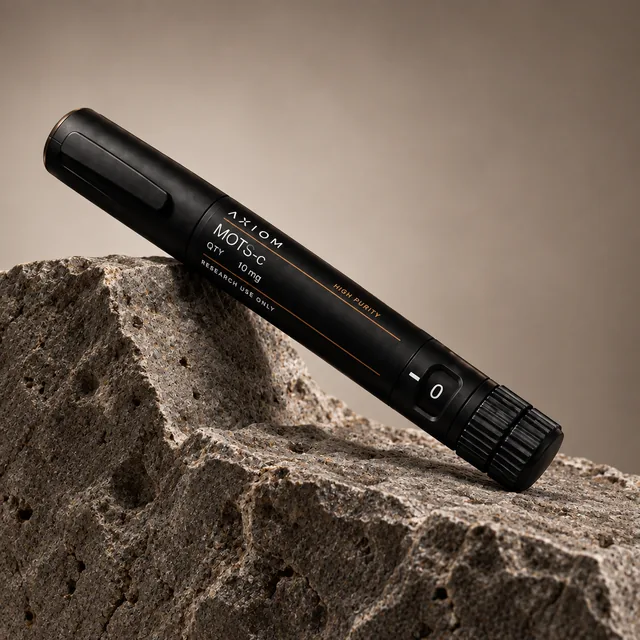
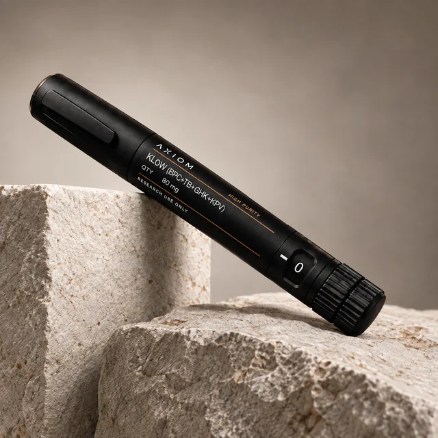
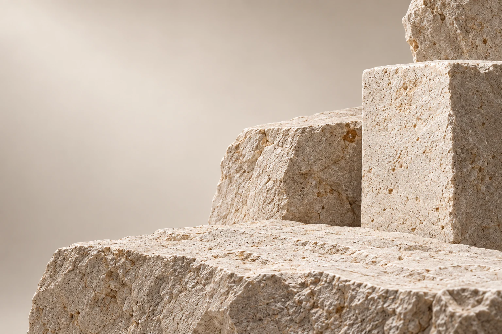

The AXIOM standard
Documented research materials, backed by chromatography and mass spectrometry. Coded by lot. Delivered cold chain to the door.

Retatrutide
MOTS-c
KLOWA curated collection of research compounds, each documented by lot and delivered cold chain.
Choose a size and order on WhatsApp.
View all 65 compounds {{arrow}}
From sourcing to shipment, every detail is considered. Explore the documentation, care and process behind the AXIOM standard.
Learn about the standard {{arrow}}From the lot code to the cold chain, every detail has a purpose.
Your next step